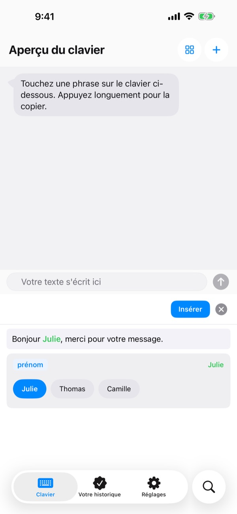
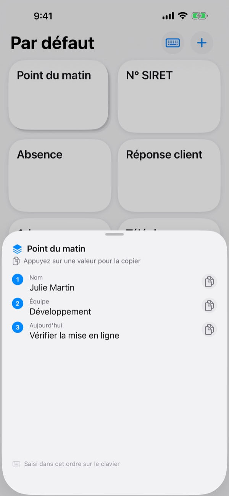
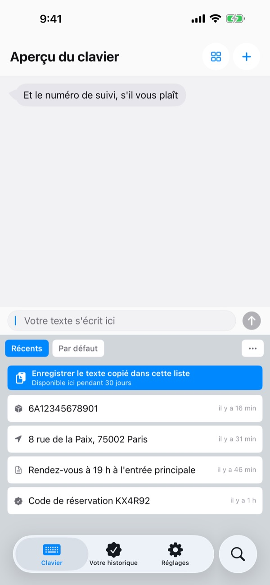
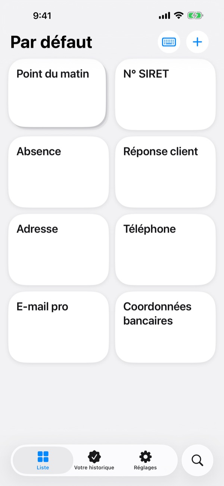

Ne tapez plus
deux fois la même chose
Coordonnées bancaires, adresse, formule d’ouverture de vos e-mails : enregistrez-les une seule fois. Dans Messages, Mail, Safari et partout où vous écrivez, elles sont à un toucher sur le clavier.
Toutes les fonctions sont gratuites pour vos 100 premières insertions.
Essayez ici même
Voici l’Aperçu du clavier de l’app elle-même. Sur votre iPhone, ce clavier apparaît partout où vous pouvez écrire.
Combien de fois avez-vous tapé votre numéro de compte aujourd’hui ?
Un ami vous demande où virer sa part, et vous rouvrez l’app de votre banque pour copier le numéro. Puis vous retapez votre adresse de livraison lettre par lettre, et vous écrivez la même formule d’accueil à chaque client. ClipKeyboard garde ces lignes sur le clavier, prêtes à s’insérer d’un toucher.
Ne remplissez que ce qui change
Les modèles laissent en blanc les parties qui changent, comme {nom} ou {date}.
À l’insertion, seuls ces blancs vous sont demandés, et vous pouvez choisir une valeur déjà utilisée.

Plusieurs valeurs, dans l’ordre
Une pile range plusieurs valeurs sur une seule touche, par exemple votre nom, votre équipe et la tâche du jour.
Touchez-la pour insérer la valeur en cours, puis passez à la suivante avec la flèche à côté.

Ce que vous copiez est aussi sur le clavier
Le numéro de suivi, l’adresse ou le téléphone que vous venez de copier arrive dans l’onglet Récents du clavier.
E-mails, numéros de téléphone, adresses, numéros de carte et IBAN sont reconnus et classés, pour les retrouver en une seconde.

Le sensible, sous clé
Faites de vos numéros de passeport ou de carte des phrases sécurisées, verrouillées par Face ID.
Un numéro de compte sur papier ? Prenez-le en photo et passez le doigt uniquement sur les caractères utiles.

Trois étapes pour commencer
- 1
Ajoutez le clavier
Réglages > Général > Clavier > Claviers > Ajouter un clavier, puis choisissez ClipKeyboard.
- 2
Autorisez l’accès complet
Le clavier en a besoin pour lire les phrases enregistrées dans l’app. Ce que vous tapez ne quitte jamais votre appareil.
- 3
Maintenez le globe
Dans n’importe quelle app, maintenez le doigt sur 🌐, choisissez ClipKeyboard et touchez une touche.
Ce que vous pouvez mettre sur le clavier
- Phrase
- S’insère exactement comme vous l’avez enregistrée, retours à la ligne et emoji compris.
- Modèle
- Les blancs entre accolades, comme {nom}, se remplissent à chaque insertion.
- Pile
- Plusieurs valeurs sur une touche. La flèche passe à la suivante.
- Phrase sécurisée
- Ne s’insère qu’après Face ID ou Touch ID. (Pro)
- Phrase image
- Touchez pour copier l’image, puis collez-la dans votre message.
- Historique du presse-papiers
- Garde ce que vous copiez, classé par type, prêt à resservir.
- Scanner du texte
- Passez le doigt sur le texte d’une photo pour n’en prendre que ce passage. La photo n’est pas conservée.
Le guide complet se trouve sur m1zz.github.io/ClipKeyboard/fr/tutorial.html.
100 insertions pour vous décider
Gratuit
- Toutes les fonctions jusqu’à 100 insertions de phrases
- Tout ce que vous avez créé continue de fonctionner ensuite
- Nouveaux éléments : jusqu’à 10 phrases, 3 modèles, 3 piles et 5 images
- 50 éléments dans l’historique du presse-papiers
Plus · Pro
- Plus : phrases, modèles, piles et images illimités, 100 éléments dans l’historique du presse-papiers
- Pro : tout Plus, avec en plus la sauvegarde iCloud, le verrouillage Face ID et la synchronisation entre appareils (bêta)
Chacun existe en abonnement annuel ou en achat unique à vie.
Vos phrases ne sont jamais supprimées, même si vous ne payez pas ou si l’abonnement prend fin. Sans publicité.
Questions
Mes phrases n’apparaissent pas sur le clavier.
L’accès complet est sans doute désactivé. Allez dans Réglages > Général > Clavier > Claviers > ClipKeyboard et activez Autoriser l’accès complet.
Puis-je garder mon clavier habituel ?
Oui. Une fois la phrase insérée, ClipKeyboard revient au clavier que vous utilisiez, et vous pouvez désactiver ce comportement dans les réglages. Vous pouvez aussi écrire directement avec ClipKeyboard : il propose des touches comme sur l’iPhone en 23 langues.
Puis-je écrire en japonais ou en chinois ?
Le japonais jusqu’aux kana, le chinois jusqu’au pinyin et au zhuyin. La conversion en kanji et en hanzi n’est pas encore disponible.
Ce que je copie n’apparaît pas dans l’historique.
iOS empêche les autres apps de lire le presse-papiers d’elles-mêmes. Ouvrez l’app une fois, puis utilisez le clavier : tout apparaîtra.
Comment supprimer les valeurs enregistrées d’un modèle ?
Dans l’éditeur de modèle, touchez un blanc pour voir ses valeurs enregistrées. Balayez-en une pour la supprimer.
Que se passe-t-il après 100 insertions ?
Toutes les phrases, tous les modèles et toutes les piles que vous avez créés continuent de fonctionner. Les limites gratuites ne concernent que les nouveaux éléments. Pour les lever, choisissez Plus ou Pro.
Mes phrases sont-elles envoyées quelque part ?
Non. Elles restent sur cet appareil et nous n’en collectons pas le contenu. Avec la sauvegarde iCloud, elles sont chiffrées dans votre propre iCloud. Nous ne recueillons que des statistiques d’utilisation anonymes pour améliorer l’app, sans aucun outil d’analyse tiers.
Et si je change de téléphone ?
Activez la sauvegarde iCloud de Pro, puis restaurez sur le nouvel appareil avec le même compte Apple. Les phrases image suivent aussi. La restauration remplace les phrases déjà présentes sur cet appareil.
Ça marche sur iPad ?
Oui, sur iPhone comme sur iPad.
Mon problème n’est pas dans la liste.
Écrivez-nous à l’adresse ci-dessous et racontez-nous ce qui s’est passé. Nous répondons en général dans la journée.
Une question, une remarque ? Écrivez à leeo@kakao.com.